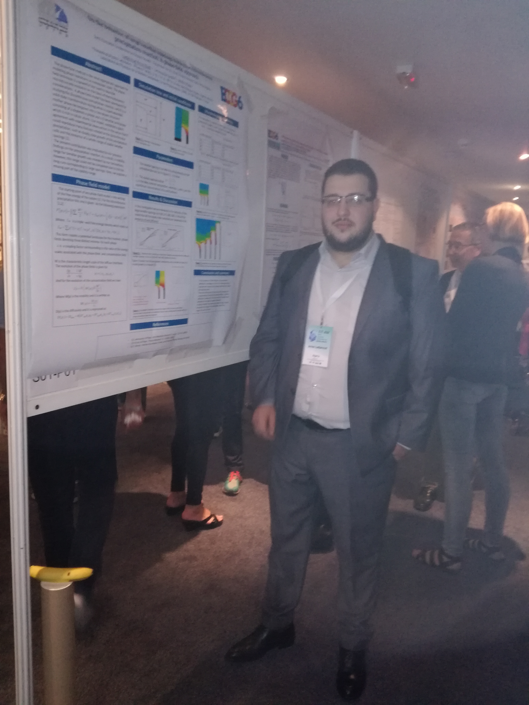
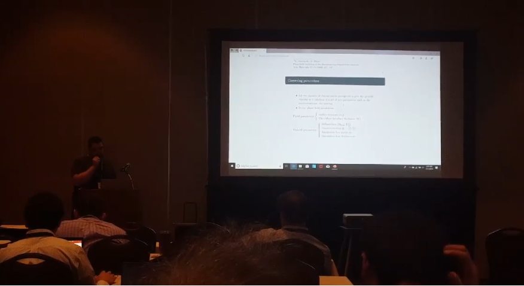

Une présentation s'impose !!
Je m'appelle Aniss j'ai 26 ans, je vis à alger et je suis passioné de physique.... Tout a commencé le jour où j'ai obtenu mon bacaloréat (option math à Alger ) je me suis, naturelement, orienté vers un tronc-commun de sciences exactes donnant accés à des formations en (physique, chimie et des filliaires d'ingénieurs).
Les premiers cours de physique étaient passionant, ceux de mathématiques aussi.. on dit souvent que l'apétit vient en mangeant .... j'ai finalement obtenu ma licence en physique fondamentale en 2015 puis mon Master en physique théorique (option théorie des plasmas) et je suis actuélement doctorant en 3éme année et mon sujet de thèse s'articule autour des réactions solides dans les alliages.
Les alliages sont des systèmes aussi passionant que compliquées ! Ma contribution a cet imense axe de recherche se résume à simuler la précipitation discontinue à l'aide de la technique du champ de phase
Ayant du temps libre sutout durant cette vague de COVID 19, je me suis dis qu'il serait interessant de partager ma passion à travers ce site web.
Me voici !

Cette photo a été prise lors d'une conférence en Bulgarie
Me revoici !

Cette photo a été prise lors d'une autre conférence aux USA